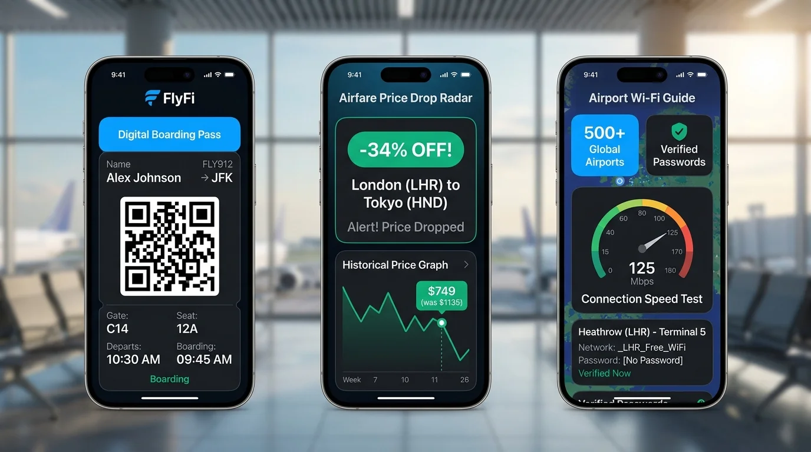
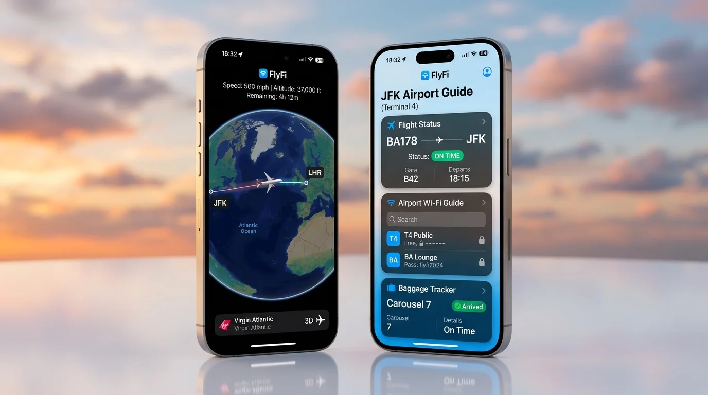

Architecting a high-performance web platform for global airline passengers (flyfi.app) — combining real-time 3D flight trajectory radar, crowdsourced in-flight Wi-Fi coverage databases, and searchable terminal gateway credentials across 500+ international airports.
Interactive flight map displaying current flight altitude (FL380–FL420), heading angle, and dynamic ETA predictions.
Comprehensive breakdown of satellite connectivity vendors (Starlink, Viasat, Gogo) across 35+ international carriers.
Searchable directory of terminal Wi-Fi networks, captive-portal login tips, and airport lounge access credentials.
Engineered to funnel desktop trip planners into the native FlyFi iOS and Android companion apps prior to boarding.
Passengers flying across domestic and international routes frequently suffer from opaque satellite Wi-Fi pricing, sluggish captive portals, and zero visibility into satellite coverage handoffs. The FlyFi web redesign was conceived to deliver instant clarity before passengers board and while in transit:
As the Lead UI/UX Designer and Web Architect, my focus centered on creating an authoritative, modern web destination that establishes FlyFi's brand credibility while complementing the companion mobile app:
Architected responsive wireframes and high-fidelity screen mockups in Figma, ensuring fluid scaling from 4K displays down to smartphones.
Defined a structured CSS custom properties system managing aviation color swatches, card radiuses, and elevation shadows.
Structured onboarding touchpoints that convert pre-flight web visitors into active iOS App Store and Google Play installs.
Designed clear tabular numeral layouts using JetBrains Mono to present flight telemetry without visual jitter.
The centerpiece of the FlyFi web redesign is its real-time 3D flight radar. Built for aviation enthusiasts and passengers planning long-haul journeys, the portal visualizes cruising altitudes, ground speeds, and weather vectors:
Visualizes dynamic airspeed, barometric altitude, heading angles, and remaining flight times with high-precision typography. The web portal features clear route waypoints and oceanic waypoint landmarks.

Eliminating travel guesswork: FlyFi provides verified speed benchmarks across satellite vendors and terminal networks, giving travelers actionable connection intelligence before they board:
Provides travelers with verified network SSIDs, captive-portal passwords, and lounge access credentials. Speed ratings clearly differentiate Starlink LEO, Viasat Ka-band, and Gogo Ku-band connections.

Explore key visual perspectives of the live FlyFi web platform (flyfi.app). Each interface was crafted to balance high-density flight information with elegant, uncluttered layouts:
Full-length desktop capture showing the landing hero, flight radar search, airline speed database, and download CTAs.
Angled laptop perspective highlighting the radar navigation bar, telemetry pills, and dark mode contrast.
Detailed card layout showcasing satellite connectivity benchmarks, airport passwords, and flight tracking HUD.
Seamless visual alignment between the desktop web planning portal and the native iOS/Android travel app.
Every color, radius, border, and elevation level follows a rigorous token hierarchy designed specifically for high-velocity in-flight portals. Below is the live token architecture implemented across flyfi.app:
Defined with CSS Custom Properties for seamless surface depth layering
Used across hero titles and section headings. Its expressive ink-traps and warm humanist curves bring character and high-speed legibility to aviation interfaces.
Used for GPS coordinates, altitude values, IATA codes (JFK, LHR, DXB), and Wi-Fi speed ratings. Ensures tabular numeral alignment and zero visual jitter.
:root {
/* Primary Brand Neutrals */
--navy-900: #0b132b; /* Cockpit Navy */
--navy-850: #131d38;
--slate-50: #f8fafc; /* Cloud Base Surface */
--white: #ffffff;
/* Aviation Sky Blue Tokens */
--sky-600: #0284c7;
--sky-500: #0099ff; /* Active Flight & CTA */
--sky-400: #38bdf8;
--sky-50: #f0f9ff;
/* Flight Telemetry Status */
--flight-green: #10b981; /* On-Time & Landed */
--flight-amber: #f59e0b; /* Gate Change / Delay */
/* Radii & Elevation */
--radius-md: 10px;
--radius-lg: 16px;
--radius-xl: 22px;
/* Typography Stack */
--font-heading: "Bricolage Grotesque", system-ui, sans-serif;
--font-body: "Inter", system-ui, sans-serif;
--font-mono: "JetBrains Mono", monospace;
}Watch the interactive video recording of the FlyFi platform in action — demonstrating real-time flight telemetry transitions, 3D radar map dragging, and satellite speed benchmark lookups:
Redesigning an aviation web platform that serves both high-stress travelers and aviation enthusiasts yielded critical insights regarding performance, data density, and web-to-app synergy:
Flight altitude and speed metrics fluctuate continuously. Utilizing `JetBrains Mono` with fixed-width numerals ensured that altitude profiles never caused layout shifts or visual jitter as data streamed into the browser.
While dark mode is popular for night flights, daytime travel planning on laptops in bright airport concourses requires crisp white surfaces (#FFFFFF) and 1px distinct borders to resist direct solar glare through terminal windows.
Rather than trying to replicate all mobile app features on the desktop, the web experience is optimized for pre-trip research: searching airline Wi-Fi speed benchmarks and directing travelers to install the mobile app for gate notifications.